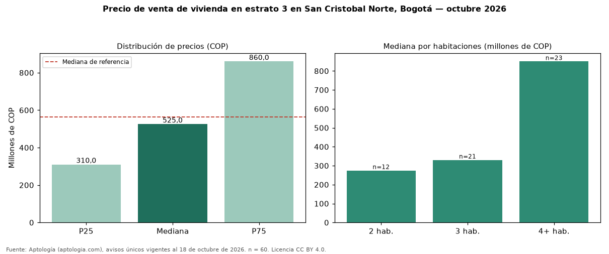

Precio de venta de vivienda en estrato 3 en San Cristobal Norte, Bogotá — octubre 2026
Con 60 avisos únicos, el precio mediano de vivienda en estrato 3 en venta en San Cristobal Norte, Bogotá es COP 525 millones. Eso es 7 % menos que la mediana de toda la oferta de venta en San Cristobal Norte (COP 565 millones). El rango intercuartílico va de COP 310 millones a COP 860 millones (razón 2,8). Por metro cuadrado, la mediana es COP 4.994.879/m² (−4 % frente a COP 5.208.667/m²). Por habitaciones: 2 habitaciones, COP 274 millones (n = 12); 3 habitaciones, COP 330 millones (n = 21); 4 o más habitaciones, COP 850 millones (n = 23). El área mediana es 105 m² (referencia: 100 m²). La antigüedad mediana declarada es de 6 años. Datos abiertos CC BY 4.0 de Aptología; fuente y búsqueda de inmuebles: https://www.aptologia.com/estrato-de/bogota/san-cristobal-norte. Archivos: PDF de 2 páginas, CSV con las cifras y gráfica PNG.

| Avisos únicos | 60 |
|---|---|
| Percentil 25 | COP 310.000.000 |
| Mediana | COP 525.000.000 |
| Percentil 75 | COP 860.000.000 |
| Mediana por m² | COP 4.994.878 |
Fuente: avisos vigentes de portales inmobiliarios recopilados por Aptología, deduplicados (mínimo 30 avisos únicos por celda). Precios pedidos, no cerrados. Fecha: 2026-10-18.